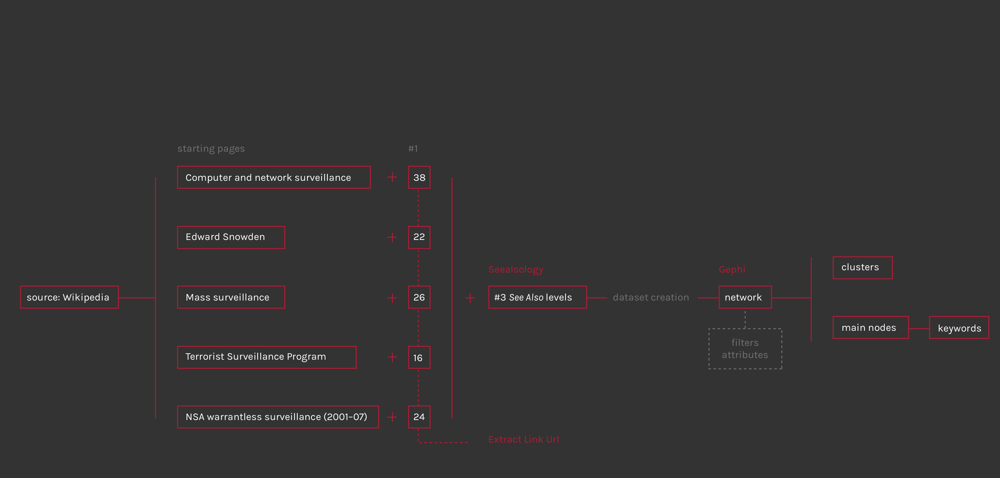

Steps of the procotol
First step of the dataset creation was the selection of five Wikipedia pages about the Mass Surveillance controversy, the issue of the whole analysis. After a general research on Wikipedia, necessary to understand who and what is involved and to have a basic knowledge about the issue, the pages selection has been done considering the most different aspects of the argument: first of all the controversy existence, defined in NSA warrantless surveillance (2001-07) page with this sentence: «The NSA warrantless surveillance controversy ("warrantless wiretapping") concerns surveillance of persons within the United States during the collection of allegedly foreign intelligence by the U.S. National Security Agency (NSA) as part of the touted war on terror». Than was necessary to insert a general page about the topic, like Mass Surveillance, that examines it from different countrys view and situations. Another important side of this theme is the world of whistleblowers disclosures, of which Edward Snowden is the most famous and present character; indeed, today like in past, whistleblowers have revealed government and intelligence secret spying programs to general public. On the other hand, NSA and governments classify their actions as a “war against terrorism”, to prevent attacks and increasing citizens security; Terrorist surveillance program summarize the beginning of modern mass surveillance, started after the 9-11 attacks, a fundamental date for the birth of this debate.
After identifing the five pages it was necessary to extract “See Also” links from each page, to start building the network of relationships. For extract the links from the html pages it has been used an html link extractor (Extract Link Url); but for show the argument context and return a significant overview, this network has to be the largest possible: the software that allows to extract other levels of “See Also” (or rather the “See Also” of wikipedia page “See Also” and so on…) is Seealsology. The choice has been to set the “Distance” parameter at three, that means to extract three levels of “See Also”, starting by a source including the five selected pages and the first level of “See Also”. Once obtained the csv or gexf file is ready to be imported in Gephi for the network visualization.
The network spatialization has been done using Force Atlas 2 algorithm; the InDegree value was used for rank the nodes size, while for clustering them has been used the Modularity class, a parameter that «measures how well a network decomposes into modular communities» (wiki.gephi.org). The network visualization allows to discern different sub-networks (clusters) and define the operating area in this wide and heterogeneous context.
